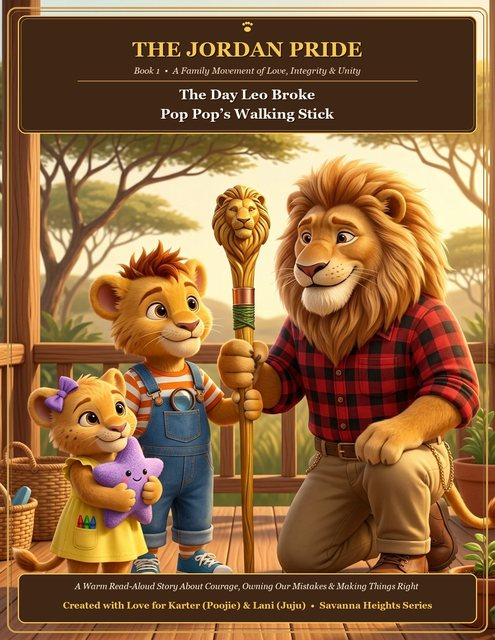

Book 1 · 32 Pages Integrity & CourageFlagship · Best for Separated Dads & Grandpas
The Day Leo Broke Pop Pop's Walking Stick
When six-year-old Leo swings Pop-Pop's carved golden pine walking stick like a pirate sword, it snaps in two. With little Maya holding his paw, Leo finds the courage to confess—and learns in Pop-Pop's workshop that a mended joint can become even stronger right where it broke.
Pop-Pop: "Only weak lions lie. Strong lions tell the truth—even when their knees are shaking."